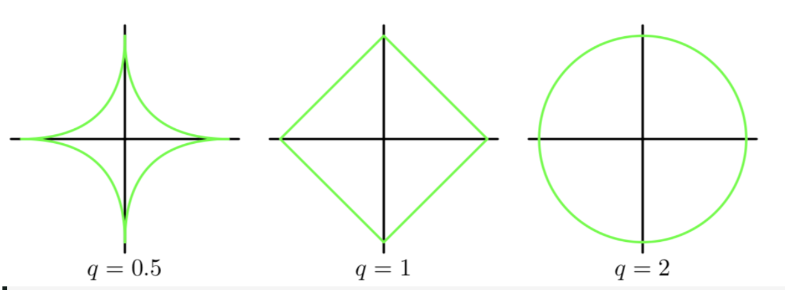
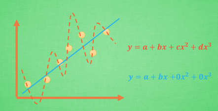
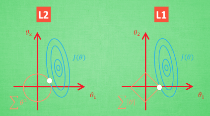
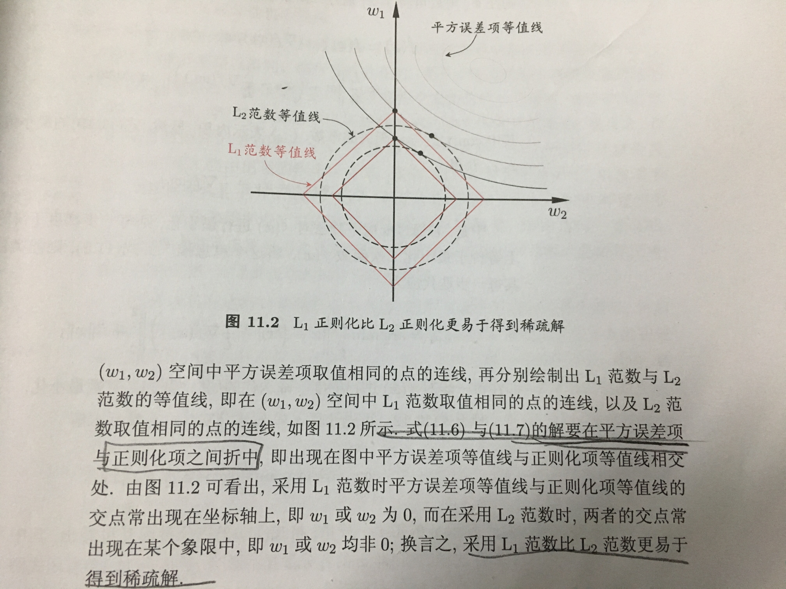

深入理解 L1 L2 正则
Table of Contents
对如刚入门的人来说，对于 L1 L2 Regularization 可能不好理解。
- 什么是 L0 L1 L2 范数？
- 引入 L0 L1 L2 的目的是什么？
- 为什么 L1 正则可以实现参数稀疏，而 L2 正则不可以？
范数以及 L0 L1 L2 是什么
简单来描述，范数的本质是距离，存在的意义是为了实现比较。比如，在一维实数集合中，我们随便取两个点 4 和 9，我们知道 9 比 4 大，但是到了二维实数空间中，取两个点（1，1）和（0，3），这个时候我们就没办法比较它们之间的大小，因为它们不是可以比较的实数，于是我们引入范数这个概念，把我们的（1，1）和（0，3）通过范数分别映射到实数 和 3，这样我们就比较这两个点了。所以你可以看到，范数它其实是一个函数，它把不能比较的向量转换成可以比较的实数。这里的 L0 L1 L2 的距离都是和 0 进行比较的。 例如 L1 是点 \(|x-0|\) 大小
- L0 范数表示的就是向量中非零元素的个数
- L1 范数就是绝对值范数， \[\left\|x\right\|=\left|x\right|\]
- L2 范数就是欧几里得距离 \[{\displaystyle \left\|{\boldsymbol {X}}\right\|_{2}:={\sqrt {x_{1}^{2}+\cdots +x_{n}^{2}}}.}\]
- Lp 范数就是下面的定义， 其中 \(p ≥ 1\) \[\left\|\mathbf {x} \right\|_{p}:={\bigg (}\sum _{i=1}^{n}\left|x_{i}\right|^{p}{\bigg )}^{1/p}.\]
图形上看下可能更加的直观，但是对于高维图像表示起来很困难尤其是到了三维以上，为了简单的理解我们以 2 维为例。 我们有 \(\mathbf x =\{x_1,x_2\} \;\mathbf w=\{w_1,w_2\}\), 其中横坐标是\(w_1\), 纵坐标是 \(w_2\)

引入 L0 L1 L2 范数的目的
因为 L0 的计算是一个 NP 难问题（why？），所以为了折中我们比较常用的是 L1 和 L2。它们的引入本质上是为了加入规则限制，减少目标函数的过拟合程度。为什么可以这样说呢？因为引入正则项后，最后估计出的向量参数变短了，所以这就可以实现用尽量少的参数去估计数据。由奥卡姆剃刀原则，简单的训练模型泛化能力可能要好很多。
例如下图中的黄色和蓝色曲线，明显的蓝色拟合的要好一些，但是相应的参数也要多。如果我们分析一下泛化能力， 蓝色的泛化能力有很大可能要比黄色的好。

举一个例子，假如有如下的目标函数： \[L(w)=min\left\{ \frac{1}{N}\sum_{i=1}^{N}{(y_{i} - f(x_{i} ))^{2} + r(d)} \right\}\] 我们让 \(f(x_{i})=w_{0}x_{0}+w_{1}x_{1}+w_{2}x_{2} + w_{3}x_{3}+.....+w_{n}x_{n}\) 有泰勒公式我们可以知道使用\(f(x_i)\) 我们可以逼近任何一个函数。
假设这里我们学到了很多的参数，为了防止过拟合，我们能想到的方式是使得参数的个数最小，也就是 L0 范数最小。但是 L0 是不好求的，所以我们可以使用在某些情况下等价的 L1。L2 范数是指向量各元素的平方和然后求平方根。我们让 L2 范数的正则项||W||2 最小，可以使得 W 的每个元素都很小，都接近于 0，但与 L1 范数不同，它不会让它等于 0，而是接近于 0。
几何学上解释
下面我们从几何学上来直观的看下，L1 L2 是如何发挥作用的。

想象现在只有两个参数 θ1 θ2 要学, 蓝色的圆心是误差最小的地方, 而每条蓝线上的误差都是一样的. 正规化的方程是在黄线上产生的额外误差(也能理解为惩罚度), 在黄圈上的额外误差也是一样. 所以在蓝线和黄线 交点上的点能让两个误差的合最小. 这就是 θ1 和 θ2 正规化后的解. 要提到另外一点是, 使用 L1 的方法, 我们很可能得到的结果是只有 θ1 的特征被保留, 所以很多人也用 l1 正规化来挑选对结果贡献最大的重要特征。
关于为什么 L1 能够更容易比 L2 获得稀疏解，可以看西瓜书中的解答：

L1 L2 的比较？
- L1 正则可产生比较稀疏的解, L2 会产生更多的小的，分布比较均匀的小解来。
- L1 对 outlier 数据没有 L2 敏感，L2 对大数的惩罚比较大
- L1 加入后，有些点是不可导的点，需要做一些特殊处理
总结
我这里写的是比较浅显的，算不上深入理解。如果想看一些证明，深入理解 L1、L2 正则化 这个文章写的还是很好的。